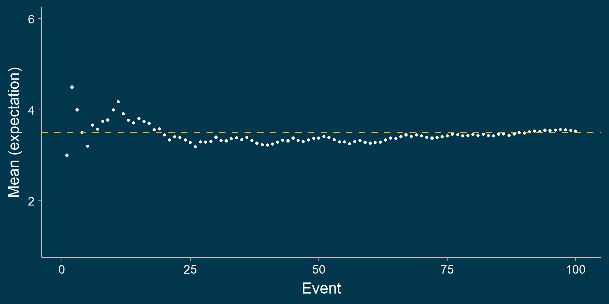
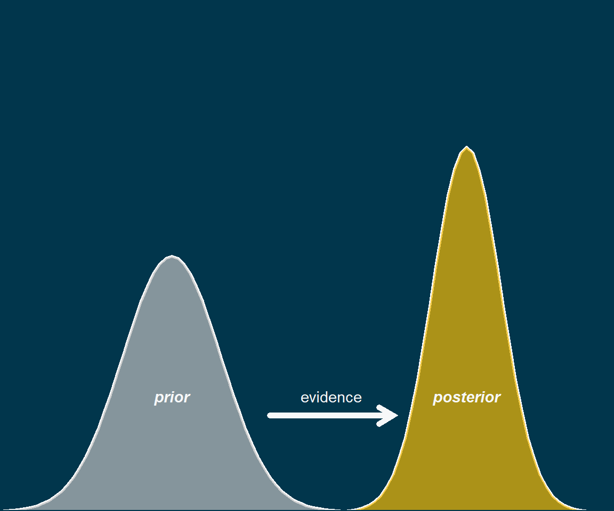
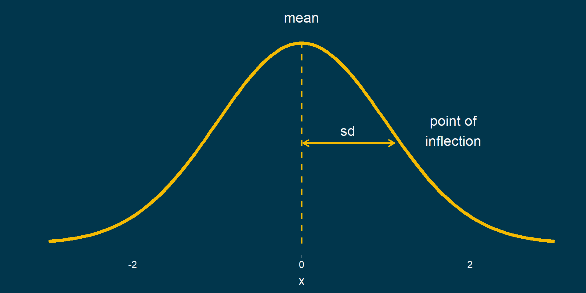
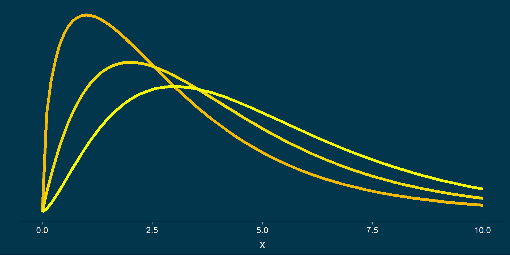
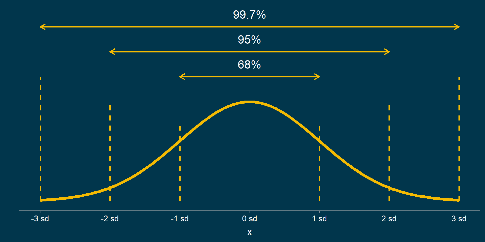
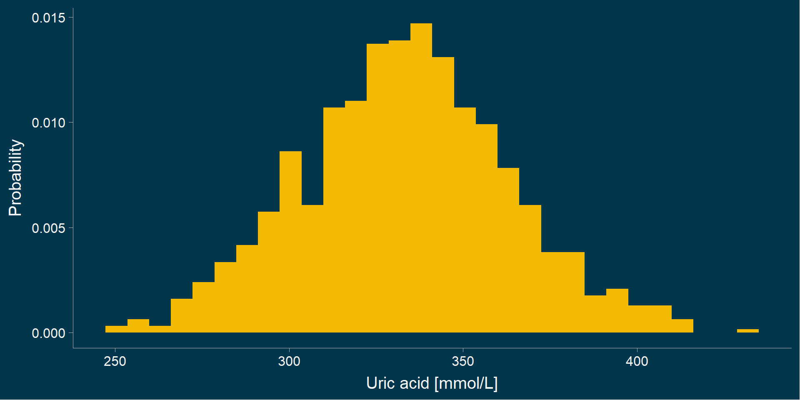

| Blood group | Relative frequency |
|---|---|
| O | 45% |
| A | 39% |
| B | 12% |
| AB | 4% |
A short introduction to probability
Dr Nikola Grubor
2024-10-31
de Méré’s problem
The need for probability theory
Probability as an extension of Aristotle’s logic.
We get to talk about the (un)certainty of belief.
Basic terms in probability theory
- Experiment
- An activity that produces an outcome (choosing a new path to test if it is faster than the old one).
\[ \text{Experiment} \rightarrow \text{Outcome} \]
- Sample space
- The set of all possible outcomes of an experiment.
\[ \text{Dice sample space:} \; \omega = \{1,2,3,4,5,6\} \]
- Event
- A subset of the outcome space.
\[ \text{Dice roll event} \; x = 6 \]
Types of events
An event is a set of possible outcomes, and can be:
Deterministic (e.g. Vitamin C deficiency \(\rightarrow\) Scurvy)
Random (stochastic)
The sample space of (elementary) outcomes \(\omega\) is a set of all possible outcomes.
\[ \omega = \{A, B\, O, AB\} \; \; \; \omega = \{\text{healthy}, \text{sick}\} \]
Somatic or germline mutations
Definition of probability
Probability is a measure of expectation
of some random event.
Expectation is more general than the mean
Note
Expectations are everywhere in medicine: survival, time to recovery after taking the drug, lab. tests (markers, biochemical parameters, eGFR), etc.
Law of large numbers
How do we determine probability?
- Objective
- Theoretical (mathematical)
- Empirical (statistical)
- Subjective
- Belief
Theoretical probability
- Available before measurement
- All possible outcomes are equally likely
Empirical probability
Empirical probability is determined (by counting) after observing the event.
\[ p = \frac{\text{expected}}{\text{total}} \]
Subjective probability
- Belief
- Expert opinion

flowchart TD
S(Symptom) --> A("Prior Belief")
Z(Sign) --> A
P(Prevalence) --> A
A --> T{"Diagnostic test"}
T --> AP("Posterior Belief")
Properties of probability
Axioms:
- Non-negativity [0, 1]
- Normality (sum = 1)
- Additivity
Additional dates:
- Event probability (\(p\))
- Probability of the opposite event (\(1-p = q\))
- Complementarity (\(p+q = 1\))
Exclusivity
Events are exclusive if they cannot occur simultaneously.
- Blood group
- Flu symptoms
- Medical sign
- Diagnoses
Laws of probability: addition (1)
Addition (summation of probabilities) of exclusive events.
Laws of Probability: Addition (2)
Addition (summation of probabilities) of non-exclusive events.
Laws of probability: multiplication
Multiplication of exclusive events.
\[ P(A \cap B) = P(A) \times P(B) \]
Conditional probability
\[ P(A \cap B) = P(A) \times P(B|A) = P(B) \times P(A|B) \]
Probability in diagnostics
CENTOR Score
- The contribution of each symptom/sign to the likelihood of strep. infections
- The result is a pre-test probability
Theoretical probability distributions
Theoretical probability distributions are specific mathematical descriptions (models) of random phenomena.
- Binomial
- Normal
Mathematical model

Bernoulli’s experiment
Binomial distribution
Conditions:
- Exclusive events
- Constant probability
- Independent
The binomial probability is given by:
\[ P(X = x) = \frac{n!}{x!(n-x)!}p^{x}q^{n-x} \]

Exercise 1
The frequency of hypertension in the population over 65 years old is 42%.
What is the probability that two people with hypertension will be in a
random sample of 7 people chosen from that same population?
Why is the normal distribution frequent?
- The normal distribution is created by adding (or multiplying) the results of many smaller processes.
- Measurement errors, growth variations, and molecular velocity are examples of such processes.

Normal distribution
Standard normal distribution
Normal distribution where \(\bar x = 0\) and \(sd = 1\). It is given by the formula:
\[ z_i = \frac{x_i - \mu}{\sigma} \]
It used to be important when calculation was done by hand via probability tables.
Probability table
Student’s t-distribution
Chi-square distribution
68-95-99.7%
Exercise 2
In a population of women between the ages of 25 and 50, serum uric acid values
are normally distributed with a mean 333 mmol/L and a
standard deviation 30 mmol/L.
What is the probability that a randomly selected person from this population has a
serum uric acid value greater than 410 mmol/l?
Probability calculation: normal distribution
